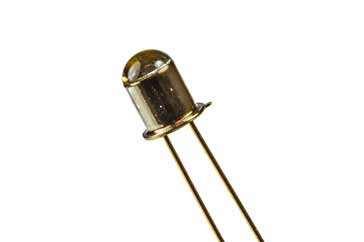
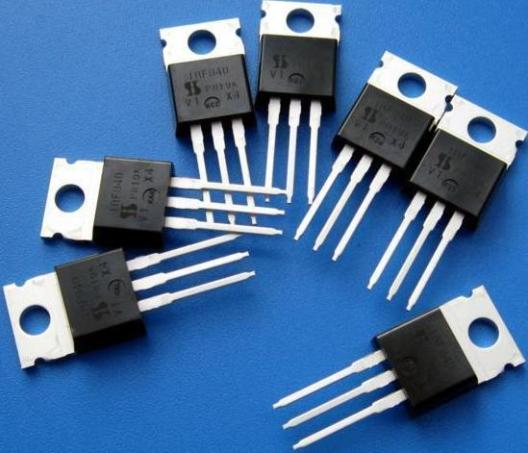
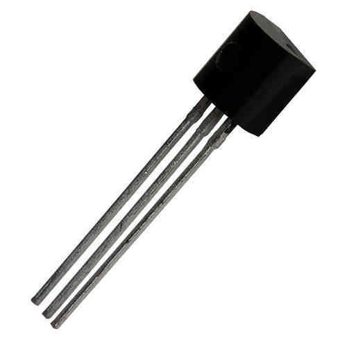

a Phototransistor is an electronic switching and current amplification component which relies on exposure to light to operate
A typical capacitor comprises two conductive plates and a non-conductive dielectric material.
A typical capacitor comprises two conductive plates and a non-conductive dielectric material.
